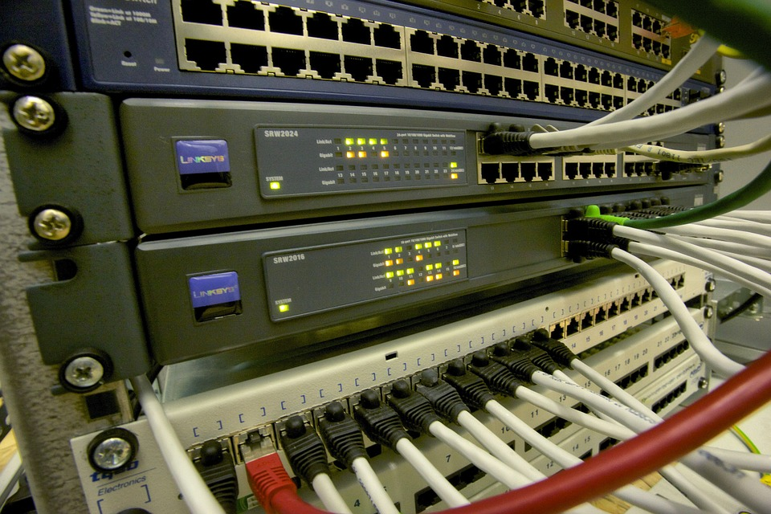

Herramientas y soluciones para administración de redes
Existen muchas herramientas para facilitar la gestión de las redes de comunicaciones. Encontramos por ejemplo, Software para monitoreo, analisis de ancho de banda, administración de usuarios, configuración de puertos y protocolos, etc.
Pero no solamente el Software es necesario, también es importante un monitoreo constante a los dispositivos que componen la arquitectura de la red, desde los servidores, pasando por los srouters, switches, hasta llegar a los dispositivos finales como computadores, impresoras y telefonos.
En el mercado se ofertan multitud de herramientas, tanto físicas como logicas para gestionar este tipo de actividades.
Encontramos los Firewall, los UTM, los antivirus administrados por consola o en la nube. También se está popularizando el tema de virtualización de servidores por todos los beneficios que está buena práctica ofrece.